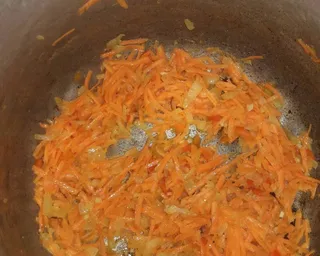
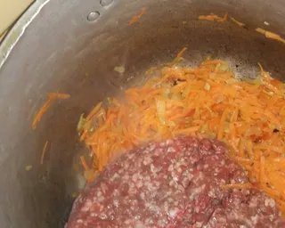
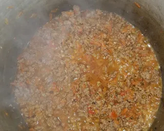
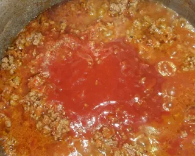
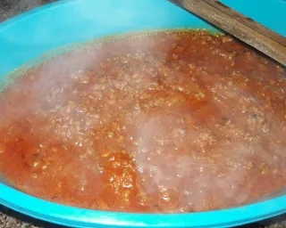
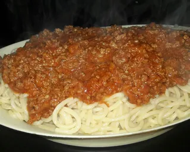

Receta de como hacer fideos con salsa bolognesa
Ingredientes necesarios
- 500 gs. Carne molida
- 2 cebellos
- 1/2 morrón
- 1 zanahoria
- 2 dientes ajo
- Sal, pimenton, comino
- 1 pure de tomate
- 1 paq Fideos foratti
Receta
- Colocar un chorrito de aceite en la olla picar los ajos, la cebolla, El morrón rallar la zanahoria
y rehogar con una pizca de sal dejar cocinar unos minutos

- Colocar la carne molida y mezclar bien

- Agregar una pizca de sal y los condimentos y dejar cocinar unos 15 min

- Luego colocar el puré de tomates mezclar y dejar cocinar por completo

- Así quedará después de unos 15 min más de cocción

- Poner a hervir agua con sal y un chorrito de aceite una vez que este hirviendo colocar los fideos cocinar y
listo a disfrutar de esta comida deliciosa.(Yo le puse un cubito de manteca a los fideos listos queda riquísimo)

Volver a la pagina principal